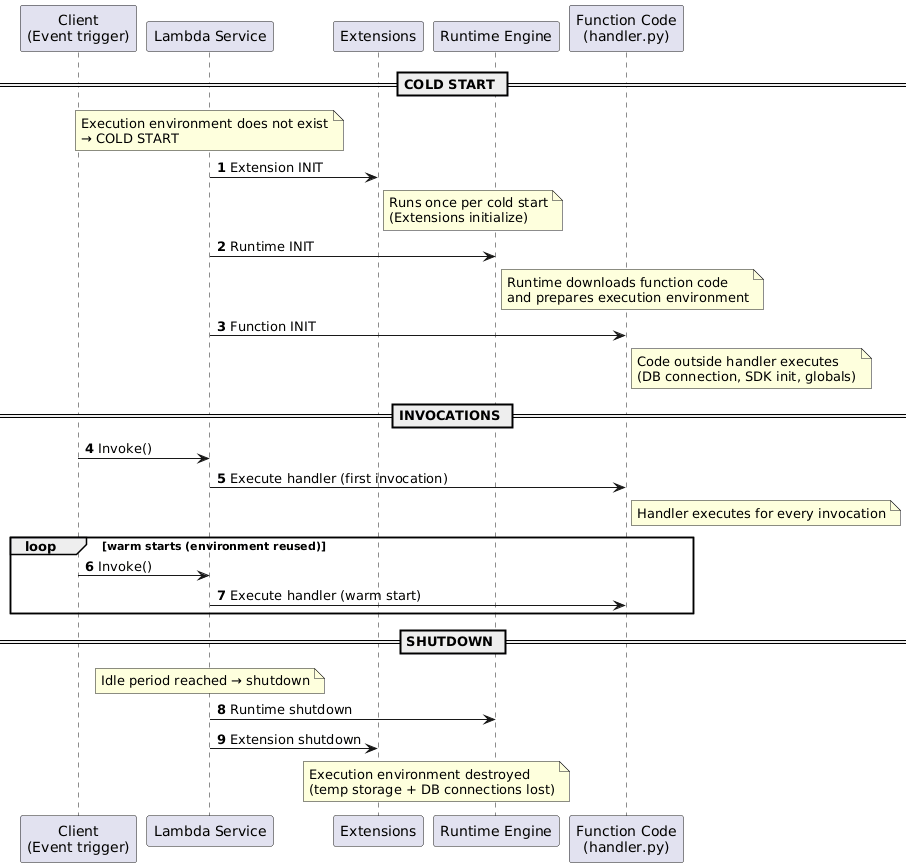

1. Amazon ECS
Elastic Container Service orchestrates Docker containers using task definitions and services while taking care of placement and health checks. Know which construct holds IAM roles, CPU, or restart logic—exam questions love mapping requirements to ECS components.
1.1 Core Concepts
- Task definition – describes one or more containers, CPU/memory, networking mode, IAM task role, port mappings, command/entrypoint, and environment variables.
- Service – runs a desired count of tasks, handles restarts, load balancer registration, and placement strategies.
- Task role – IAM permissions inherited by every container in the task.
1.2 Launch Types
| Launch Type | When to Use | Operational Model |
|---|---|---|
| EC2 | Need control over servers, spot/reserved pricing, or local instance storage. | Provision and patch the EC2 instances; ECS schedules tasks onto them. |
| Fargate | Serverless containers, per-second billing, small/bursty workloads, fast scale. | AWS manages the infrastructure; each task receives an ENI inside your VPC. |
| ECS Anywhere | Hybrid/on-premises clusters while reusing ECS control plane. | Install the ECS Anywhere agent on customer-managed hardware. |
2. Amazon EKS
Managed Kubernetes service with multi-AZ control plane and integration into AWS networking and storage.
- Control plane nodes run in an AWS-managed VPC across multiple AZs with etcd replication. AWS patches/monitors the API servers and etcd so you only worry about worker nodes.
- Worker nodes (self-managed, managed node groups, or Fargate pods) live in your VPC; ENIs are injected into your subnets so SGs/NACLs behave like standard EC2 instances.
- Storage add-ons (EBS/EFS/FSx CSI drivers) provide persistent volumes; load balancers map to ALB/NLB via controllers. IAM roles for service accounts (IRSA) integrate pods with IAM.
- EKS Anywhere/EKS Distro extend clusters on-premises for hybrid edge deployments.
3. Amazon SNS
Pub/sub messaging service for fan-out scenarios.
- Topics receive up to 256 KB payloads and replicate messages to subscribers (HTTP/S, email, SMS, Lambda, SQS, mobile push, Kinesis, Firehose, etc.).
- Delivery is push-based with retries/backoff; CloudWatch metrics capture success/failure per protocol. Enable message filtering to reduce downstream noise.
- Encrypt topics with SSE and control access through topic policies so other accounts or services can publish/subscribe.
- Typical pattern: one publish triggers multiple downstream workflows—order events can update CRMs, notify warehouses, and text customers simultaneously.
4. Amazon SQS
Fully managed queueing service for decoupling producers/consumers.
4.1 Queue Behavior
- Producers send messages up to 256 KB; consumers poll for messages (optionally long-poll to cut empty responses).
- Visibility timeout prevents other consumers from seeing a message while it is being processed. If the consumer fails to delete the message before timeout, the message becomes visible again—set the timeout slightly longer than normal processing to avoid duplicates.
- Dead-letter queues (DLQ) capture poison messages after
maxReceiveCountattempts so bad payloads do not clog the primary queue. - Supports server-side encryption, VPC endpoints, and scaling ASGs based on queue depth (watch
ApproximateNumberOfMessagesVisible).
4.2 Queue Types
| Type | Ordering | Throughput | Use Case |
|---|---|---|---|
| Standard | Best-effort ordering; at-least-once delivery. | Unlimited TPS. | General messaging, fan-out from SNS. |
| FIFO | Exactly-once processing, strict ordering (queue name ends with `.fifo`). | Up to 3,000 msgs/sec with batching (300 without). | Workflows requiring ordered events or financial transactions. |
4.3 Extras
- Extended Client Library – stores payloads >256 KB in S3, leaving a pointer in the queue. Use for image/document pipelines without rolling custom chunking.
- Delay queues – postpone delivery (0–15 minutes). Not supported on FIFO queues. Handy for reminders, scheduled notifications, or staggering retries.
- Pricing – billed per request (1 request = up to 10 messages/64 KB) plus optional long polling. Long polling lowers cost by reducing empty responses.
5. Amazon MQ
Managed Apache ActiveMQ broker for legacy protocols (AMQP, MQTT, OpenWire, JMS, STOMP).
- Deploys inside a VPC (single instance or HA pair). You manage network access via security groups.
- Ideal for lift-and-shift from on-premises brokers when SNS/SQS APIs are not compatible.
6. AWS Lambda
6.1 Execution Model
- Package up to 50 MB (zipped) / 250 MB (unzipped) with code + dependencies. Upload via console/CLI/CI or container images.
- Configure runtime (Node.js, Python, Java, .NET, custom Runtime API), handler, memory (128 MB–10,240 MB), environment variables, execution role, and optional layers.
/tmpscratch space (512 MB) or mount EFS for larger persistent storage across invocations.- Billed per request + ms of execution (memory size influences cost); max 900 seconds per invoke.
- CloudWatch Logs, metrics, and AWS X-Ray capture invocation counts, durations, cold starts, and downstream traces.
6.2 Networking
- Public networking – Lambda runs on AWS shared infrastructure with internet egress to public services (perfect for hitting AWS public APIs/SaaS endpoints).
- VPC networking – attach Lambda to private subnets; AWS creates ENIs for each subnet/security group combo (initial cold attach can take ~90s). Use NAT Gateway or VPC endpoints for outbound access. Required for RDS, Redshift, or on-prem targets.
6.3 Invocation Patterns
- Synchronous – caller waits for response (API Gateway, CLI invoke). Caller handles retries/timeouts; errors bubble back immediately.
- Asynchronous – Lambda queues the event and retries up to two times before sending to DLQ/SNS/EventBridge; write idempotent code because events may re-run.
- Event source mappings – poll streams/queues (Kinesis, DynamoDB Streams, SQS) and push batches to Lambda; configure batch size, parallelism, and bisect retry, all using the function’s execution role.
6.4 Versions & Aliases
- Publishing creates immutable versions with unique ARNs;
$LATESTis mutable. - Aliases (e.g.,
Dev,Prod) point to versions and can route percent-based traffic between two versions (canary).$LATESTcannot be used for alias routing.
6.5 Environment, Context, and Layers
- Environment variables – key/value pairs per version; optionally encrypted with KMS.
- Execution context – runtime + extensions + function code kept warm for reuse; cold starts load code from S3. Provisioned Concurrency pre-warms contexts.
- Layers – shared
/optbundles for libraries or runtimes, shrinking deployment packages. - Container images – package runtimes via ECR images with Lambda Runtime API for consistent environments.
6.6 Function Handler Lifecycle

🧩 Lambda Lifecycle
7. API Gateway
Managed front door for REST, HTTP, and WebSocket APIs. Think of it as a programmable HTTPS fabric that centralizes auth, throttling, caching, and protocol translation.
7.1 Structure
- Handles authorization (IAM, Cognito, Lambda authorizers), throttling, caching, CORS, request/response transformation.
- Endpoint types: Edge-Optimized (CloudFront PoPs), Regional, Private (via interface endpoints).
- Deploy APIs to stages (e.g., dev/test/prod). Each stage has its own URL, config, cache, and canary release settings. Changes go live only after deployment to a stage.
- Resource path:
https://{restapi-id}.execute-api.{region}.amazonaws.com/{stage}/{resource}.
7.2 Integrations
- Method request → integration request → integration response → method response. Knowing where mapping templates apply is key to debugging transformations.
- Integration types:
- MOCK – testing without backends.
- HTTP / HTTP Proxy – invoke HTTP endpoints; proxy passes through unmodified payloads.
- AWS / AWS_PROXY – call AWS services; Lambda proxy sends entire request context to Lambda.
- Use mapping templates (Velocity Template Language) to reshape payloads (e.g., REST-to-SOAP translation, header mapping).
7.3 Operations
- Errors:
400(bad request),403(access denied),429(throttled),502/503/504(integration failures/timeouts). Map these to upstream or client issues quickly. - Caching per stage (500 MB–237 GB, TTL 0–3600 seconds). Cache invalidation is manual—consider
InvalidateCacheor redeploy when data changes.
8. Event-Driven Services
8.1 EventBridge (CloudWatch Events)
- Event bus + rules service: “If X happens or at time Y, do Z.” EventBridge consumes events from AWS services, SaaS partners, or custom apps and routes them to targets (Lambda, Step Functions, Kinesis, API destinations, etc.).
- Supports default, partner, and custom event buses; CloudWatch Events only exposed the default bus. Multi-bus design keeps noisy teams isolated.
- Two rule types: Event pattern (match JSON fields) and Schedule (cron/
rate()expressions). Rules can send the same event to multiple targets with JSON input transformations. - Use resource policies to share buses across accounts/organizations and archive/replay events for troubleshooting.
8.2 AWS Step Functions
- Orchestrates long-running serverless workflows using Amazon States Language (JSON). Ideal when Lambda chaining becomes messy, or when processes exceed Lambda’s 15-minute limit.
- State machine primitives:
Task,Choice,Wait,Parallel,Map,Succeed,Fail. Each state can define retry/catch blocks for resiliency. - Standard workflows keep state up to 1 year and provide exactly-once semantics; Express workflows favor millions of short executions per second at lower cost but best-effort ordering.
- Integrates with Lambda, ECS/Fargate, Batch, DynamoDB, SNS/SQS, Glue, EMR, SageMaker, API Gateway, Step Functions callbacks, and more. IAM roles govern which services each state can call.
- Visual workflow designer + CloudWatch execution history make debugging easier than manual Lambda pipelines.
8.3 AWS SWF
- Predecessor to Step Functions; still used when workflows require custom deciders, worker heartbeats, external signals, child workflows, or deep Mechanical Turk integration.
- Provides activity task/worker model with Amazon Flow Framework support. You own the worker code and can pause/resume human workflows mid-flight.
- Exam tip: choose SWF when you need centralized state tracking with human intervention or when migrating legacy Flow Framework workloads.
9. Content & Media Services
9.1 Amazon Mechanical Turk
- Crowdsourcing marketplace for Human Intelligence Tasks (HITs).
- Requesters post tasks with qualifications; workers complete tasks for pay per HIT. APIs manage HIT lifecycle programmatically.
- Useful for labeling, moderation, surveys, sentiment analysis, or any workflow requiring human judgment before automation.
- Often paired with S3 + Lambda pipelines where MTurk handles edge cases (e.g., ambiguous images) before data re-enters automated steps.
9.2 AWS Elemental MediaConvert (vs. Elastic Transcoder)
- File-based video transcoding: pull from S3, process jobs, push outputs back to S3.
- MediaConvert is the modern service (more codecs, parallelism, EventBridge notifications, reserved pricing). Elastic Transcoder is legacy but supports WebM/Animated GIF/MP3/FLAC/Vorbis/WAV.
10. IoT & Edge
10.1 AWS IoT Core
- Connect millions of IoT devices using MQTT/HTTP, manage device shadows (cloud-side JSON twins), and trigger rules to Lambda/Kinesis/etc.
- Device shadows buffer desired/reported state so applications interact reliably even with intermittent connectivity.
10.2 AWS IoT Greengrass
- Extends AWS compute/messaging/ML to edge devices; run Lambda functions, containers, data streams locally, and sync to the cloud when connectivity returns.
- Deploy Greengrass cores on gateways; devices keep operating locally during network loss.
11. Developer Tooling
11.1 AWS Serverless Application Model (SAM)
- Open-source framework that extends CloudFormation with serverless-specific resources and transforms.
- SAM template = infrastructure-as-code for S3/CloudFront (frontend assets), API Gateway, Lambda, DynamoDB, etc.
- SAM CLI – build/test locally, package artifacts, and deploy stacks.
- Full serverless app flow: host static assets on S3/CloudFront, expose APIs via API Gateway, run compute on Lambda, state on DynamoDB.
12. Exam Reminders
- API Gateway caching – enabled per stage/method; TTL 0–3600 seconds; incurs hourly charge but dramatically reduces backend load. Invalidate caches after major data changes.
- ElastiCache refresher – Redis offers persistence, pub/sub, clustering, and transactions; Memcached is a simple multi-threaded sharded cache with no replication. Choose accordingly.
- Forward proxy vs NAT Gateway – forward proxies enforce egress policies (DLP/IDS/IPS/caching) for specific clients; NAT Gateway simply translates private → public IP for egress and cannot inspect payloads.
- Traffic Mirroring – replicate ENI traffic to monitoring appliances for deep packet analysis without affecting production flows.
- IoT Core – device gateway + rules engine; integrates with Lambda/Kinesis and handles offline device state via shadows.
- AppSync – serverless GraphQL with real-time subscriptions, offline sync, and resolvers into DynamoDB, Lambda, RDS, OpenSearch, or HTTP endpoints.
- Contact-center AI stack – Amazon Lex (IVR bots), Polly (text-to-speech), Transcribe (call recording), and Comprehend (NLP sentiment) combine for contact center analytics.